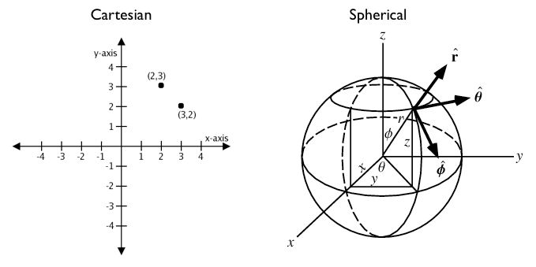
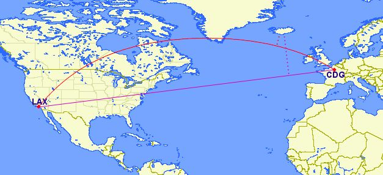
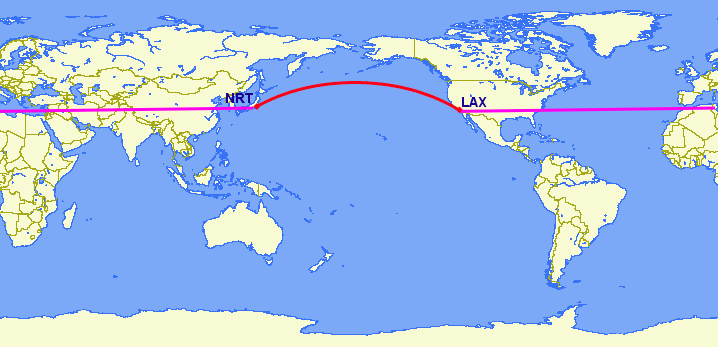

22. Geography¶
It is very common to have data in which the coordinate are “geographics” or “latitude/longitude”.
Unlike coordinates in Mercator, UTM, or Stateplane, geographic coordinates are not Cartesian coordinates. Geographic coordinates do not represent a linear distance from an origin as plotted on a plane. Rather, these spherical coordinates describe angular coordinates on a globe. In spherical coordinates a point is specified by the angle of rotation from a reference meridian (longitude), and the angle from the equator (latitude).
You can treat geographic coordinates as approximate Cartesian coordinates and continue to do spatial calculations. However, measurements of distance, length and area will be nonsensical. Since spherical coordinates measure angular distance, the units are in “degrees.” Further, the approximate results from indexes and true/false tests like intersects and contains can become terribly wrong. The distance between points get larger as problem areas like the poles or the international dateline are approached.
For example, here are the coordinates of Los Angeles and Paris.
- Los Angeles:
POINT(-118.4079 33.9434) - Paris:
POINT(2.3490 48.8533)
The following calculates the distance between Los Angeles and Paris using the standard PostGIS Cartesian ST_Distance(geometry, geometry). Note that the SRID of 4326 declares a geographic spatial reference system.
SELECT ST_Distance(
ST_GeometryFromText('POINT(-118.4079 33.9434)', 4326), -- Los Angeles (LAX)
ST_GeometryFromText('POINT(2.5559 49.0083)', 4326) -- Paris (CDG)
);
121.898285970107
Aha! 121! But, what does that mean?
The units for spatial reference 4326 are degrees. So our answer is 121 degrees. But (again), what does that mean?
On a sphere, the size of one “degree square” is quite variable, becoming smaller as you move away from the equator. Think of the meridians (vertical lines) on the globe getting closer to each other as you go towards the poles. So, a distance of 121 degrees doesn’t mean anything. It is a nonsense number.
In order to calculate a meaningful distance, we must treat geographic coordinates not as approximate Cartesian coordinates but rather as true spherical coordinates. We must measure the distances between points as true paths over a sphere – a portion of a great circle.
Starting with version 1.5, PostGIS provides this functionality through the geography type.
Note
Different spatial databases have different approaches for “handling geographics”
- Oracle attempts to paper over the differences by transparently doing geographic calculations when the SRID is geographic.
- SQL Server uses two spatial types, “STGeometry” for Cartesian data and “STGeography” for geographics.
- Informix Spatial is a pure Cartesian extension to Informix, while Informix Geodetic is a pure geographic extension.
- Similar to SQL Server, PostGIS uses two types, “geometry” and “geography”.
Using the geography instead of geometry type, let’s try again to measure the distance between Los Angeles and Paris. Instead of ST_GeometryFromText(text), we will use ST_GeographyFromText(text).
SELECT ST_Distance(
ST_GeographyFromText('POINT(-118.4079 33.9434)'), -- Los Angeles (LAX)
ST_GeographyFromText('POINT(2.5559 49.0083)') -- Paris (CDG)
);
9124665.26917268
A big number! All return values from geography calculations are in meters, so our answer is 9124km.
Older versions of PostGIS supported very basic calculations over the sphere using the ST_Distance_Spheroid(point, point, measurement) function. However, ST_Distance_Spheroid is substantially limited. The function only works on points and provides no support for indexing across the poles or international dateline.
The need to support non-point geometries becomes very clear when posing a question like “How close will a flight from Los Angeles to Paris come to Iceland?”
Working with geographic coordinates on a Cartesian plane (the purple line) yields a very wrong answer indeed! Using great circle routes (the red lines) gives the right answer. If we convert our LAX-CDG flight into a line string and calculate the distance to a point in Iceland using geography we’ll get the right answer (recall) in meters.
SELECT ST_Distance(
ST_GeographyFromText('LINESTRING(-118.4079 33.9434, 2.5559 49.0083)'), -- LAX-CDG
ST_GeographyFromText('POINT(-22.6056 63.9850)') -- Iceland (KEF)
);
502454.906643729
So the closest approach to Iceland (as measured from its international airport) on the LAX-CDG route is a relatively small 502km.
The Cartesian approach to handling geographic coordinates breaks down entirely for features that cross the international dateline. The shortest great-circle route from Los Angeles to Tokyo crosses the Pacific Ocean. The shortest Cartesian route crosses the Atlantic and Indian Oceans.
SELECT ST_Distance(
ST_GeometryFromText('Point(-118.4079 33.9434)'), -- LAX
ST_GeometryFromText('Point(139.733 35.567)')) -- NRT (Tokyo/Narita)
AS geometry_distance,
ST_Distance(
ST_GeographyFromText('Point(-118.4079 33.9434)'), -- LAX
ST_GeographyFromText('Point(139.733 35.567)')) -- NRT (Tokyo/Narita)
AS geography_distance;
geometry_distance | geography_distance
-------------------+--------------------
258.146005837336 | 8833954.76996256
22.1. Using Geography¶
In order to load geometry data into a geography table, the geometry first needs to be projected into EPSG:4326 (longitude/latitude), then it needs to be changed into geography. The ST_Transform(geometry,srid) function converts coordinates to geographics and the Geography(geometry) function “casts” them from geometry to geography.
CREATE TABLE nyc_subway_stations_geog AS
SELECT
Geography(ST_Transform(geom,4326)) AS geog,
name,
routes
FROM nyc_subway_stations;
Building a spatial index on a geography table is exactly the same as for geometry:
CREATE INDEX nyc_subway_stations_geog_gix
ON nyc_subway_stations_geog USING GIST (geog);
The difference is under the covers: the geography index will correctly handle queries that cover the poles or the international date-line, while the geometry one will not.
There are only a small number of native functions for the geography type:
- ST_AsText(geography) returns
text - ST_GeographyFromText(text) returns
geography - ST_AsBinary(geography) returns
bytea - ST_GeogFromWKB(bytea) returns
geography - ST_AsSVG(geography) returns
text - ST_AsGML(geography) returns
text - ST_AsKML(geography) returns
text - ST_AsGeoJson(geography) returns
text - ST_Distance(geography, geography) returns
double - ST_DWithin(geography, geography, float8) returns
boolean - ST_Area(geography) returns
double - ST_Length(geography) returns
double - ST_Covers(geography, geography) returns
boolean - ST_CoveredBy(geography, geography) returns
boolean - ST_Intersects(geography, geography) returns
boolean - ST_Buffer(geography, float8) returns
geography[1] - ST_Intersection(geography, geography) returns
geography[1]
22.2. Creating a Geography Table¶
The SQL for creating a new table with a geography column is much like that for creating a geometry table. However, geography includes the ability to specify the object type directly at the time of table creation. For example:
CREATE TABLE airports (
code VARCHAR(3),
geog GEOGRAPHY(Point)
);
INSERT INTO airports VALUES ('LAX', 'POINT(-118.4079 33.9434)');
INSERT INTO airports VALUES ('CDG', 'POINT(2.5559 49.0083)');
INSERT INTO airports VALUES ('KEF', 'POINT(-22.6056 63.9850)');
In the table definition, the GEOGRAPHY(Point) specifies our airport data type as points. The new geography fields don’t get registered in the geometry_columns view. Instead, they are registered in a view called geography_columns.
SELECT * FROM geography_columns;
f_table_name | f_geography_column | srid | type
--------------------------+--------------------+------+----------
nyc_subway_stations_geog | geog | 0 | Geometry
airports | geog | 4326 | Point
Note
Some columns were omitted from the above output.
22.3. Casting to Geometry¶
While the basic functions for geography types can handle many use cases, there are times when you might need access to other functions only supported by the geometry type. Fortunately, you can convert objects back and forth from geography to geometry.
The PostgreSQL syntax convention for casting is to append ::typename to the end of the value you wish to cast. So, 2::text with convert a numeric two to a text string ‘2’. And 'POINT(0 0)'::geometry will convert the text representation of point into a geometry point.
The ST_X(point) function only supports the geometry type. How can we read the X coordinate from our geographies?
SELECT code, ST_X(geog::geometry) AS longitude FROM airports;
code | longitude
------+-----------
LAX | -118.4079
CDG | 2.5559
KEF | -21.8628
By appending ::geometry to our geography value, we convert the object to a geometry with an SRID of 4326. From there we can use as many geometry functions as strike our fancy. But, remember – now that our object is a geometry, the coordinates will be interpretted as Cartesian coordinates, not spherical ones.
22.4. Why (Not) Use Geography¶
Geographics are universally accepted coordinates – everyone understands what latitude/longitude mean, but very few people understand what UTM coordinates mean. Why not use geography all the time?
- First, as noted earlier, there are far fewer functions available (right now) that directly support the geography type. You may spend a lot of time working around geography type limitations.
- Second, the calculations on a sphere are computationally far more expensive than Cartesian calculations. For example, the Cartesian formula for distance (Pythagoras) involves one call to sqrt(). The spherical formula for distance (Haversine) involves two sqrt() calls, an arctan() call, four sin() calls and two cos() calls. Trigonometric functions are very costly, and spherical calculations involve a lot of them.
The conclusion?
If your data is geographically compact (contained within a state, county or city), use the geometry type with a Cartesian projection that makes sense with your data. See the http://spatialreference.org site and type in the name of your region for a selection of possible reference systems.
If you need to measure distance with a dataset that is geographically dispersed (covering much of the world), use the geography type. The application complexity you save by working in geography will offset any performance issues. And casting to geometry can offset most functionality limitations.
22.5. Function List¶
ST_Distance(geometry, geometry): For geometry type Returns the 2-dimensional Cartesian minimum distance (based on spatial ref) between two geometries in projected units. For geography type defaults to return spheroidal minimum distance between two geographies in meters.
ST_GeographyFromText(text): Returns a specified geography value from Well-Known Text representation or extended (WKT).
ST_Transform(geometry, srid): Returns a new geometry with its coordinates transformed to the SRID referenced by the integer parameter.
ST_X(point): Returns the X coordinate of the point, or NULL if not available. Input must be a point.
Footnotes
| [1] | (1, 2) The buffer and intersection functions are actually wrappers on top of a cast to geometry, and are not carried out natively in spherical coordinates. As a result, they may fail to return correct results for objects with very large extents that cannot be cleanly converted to a planar representation. For example, the ST_Buffer(geography,distance) function transforms the geography object into a “best” projection, buffers it, and then transforms it back to geographics. If there is no “best” projection (the object is too large), the operation can fail or return a malformed buffer. |